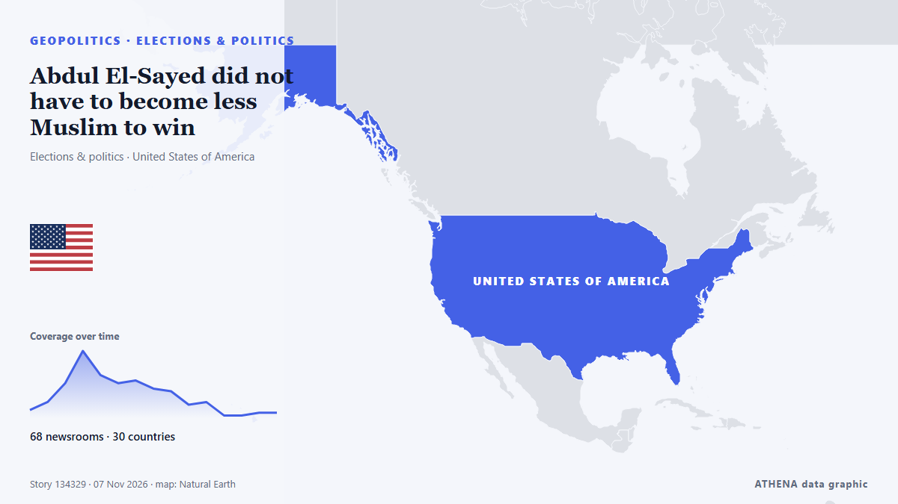

Abdul El-Sayed did not have to become less Muslim to win

With New Hampshire and Georgia staying in Democratic hands, Republicans now look to Michigan for a pickup, where Democrat Abdul El-Sayed is competing with Republican Mike Rogers. από France 24 English
Αναφέρθηκε ανεξάρτητα από 68 μέσα σε 30 χώρες από τις 3 Νοε, πρώτο το Rolling Stone· η κάλυψη εξασθενεί. Το ATHENA εκτιμά τον κίνδυνο αυξημένο (4.0/10), κυρίως λόγω της σοβαρότητάς του και της εμβέλειάς του. Βεβαιότητα 89% (υψηλή): το επιβεβαιώνουν 68 ανεξάρτητα μέσα, μέση αξιοπιστία 74%. Μέσα ανά χώρα: Ηνωμένες Πολιτείες (13), Γαλλία (7), Σιγκαπούρη (2). Κάλυψη: 3 Νοε έως 4 Νοε, 22 ώρες.
Γιατί έχει σημασία: Οι εξελίξεις στην ασφάλεια και τη διπλωματία μπορούν να μετατοπίσουν συμμαχίες, εμπόριο και αγορές πολύ πέρα από τις χώρες που εμπλέκονται.
Τι άλλαξε: 6 νέες αναφορές από 6 μέσα στο 24ωρο έως 7 Νοε.
Πρώτη διατύπωση: Midterms: Abdul El-Sayed, Mike Rogers face off for Michigan Senate seat
Οι τίτλοι των ειδήσεων παρουσιάζονται στα αγγλικά, όπως δημοσιεύτηκαν.
Με μια ματιά
Επιλέγεται, βαθμολογείται και γράφεται από τη δημοσιευμένη μεθοδολογία του ATHENA. Κανένας συντάκτης δεν παρεμβαίνει σε μεμονωμένα γεγονότα. Πώς παράγεται ›
| 03 Nov 18:30 UTC | 3 |
|---|---|
| 04 Nov 00:30 UTC | 6 |
| 04 Nov 06:30 UTC | 13 |
| 04 Nov 12:30 UTC | 25 |
| 04 Nov 18:30 UTC | 16 |
| 05 Nov 00:30 UTC | 13 |
| 05 Nov 06:30 UTC | 14 |
| 05 Nov 12:30 UTC | 11 |
| 05 Nov 18:30 UTC | 10 |
| 06 Nov 00:30 UTC | 5 |
| 06 Nov 06:30 UTC | 6 |
| 06 Nov 12:30 UTC | 1 |
| 06 Nov 18:30 UTC | 1 |
| 07 Nov 00:30 UTC | 2 |
| 07 Nov 06:30 UTC | 2 |
| 07 Nov 12:30 UTC | 1 |
Γιατί αυτοί οι αριθμοί
Σημασία
Κίνδυνος
Βεβαιότητα
Η κάλυψη — ποιος το ανέφερε και πότε
ο τίτλος όπως δημοσιεύτηκε · ανοίγει το πρωτότυπο- Rolling Stone · Ηνωμένες ΠολιτείεςCan Dems Actually Win the Senate? Here’s a State-by-State Guide
- The Hill · Ηνωμένες ΠολιτείεςSullivan campaign, NRSC form 'recount fund' for Alaska Senate race
- The Straits Times · ΣιγκαπούρηUS midterms: Alaska Republican Dan Sullivan accuses Democrats of planting ‘decoy’ Daniel J. Sullivan
- The Daily Star — page reader · ΜπανγκλαντέςAlaskan in tight Senate race accuses Dems of 'election cheating'
- France 24 English · ΓαλλίαMidterms: Abdul El-Sayed, Mike Rogers face off for Michigan Senate seat
- PBS NewsHour · Ηνωμένες ΠολιτείεςMaryland voters pass Democratic-backed redistricting amendment
- The Independent · Ηνωμένο ΒασίλειοCNN nails election night with gas prices highlighted on ‘magic wall’ during midterms returns
- Gothamist (New York City) · Ηνωμένες ΠολιτείεςRepublican Jeff Van Drew concedes NJ congressional seat in surprise victory for Democrats
- NPR · Ηνωμένες ΠολιτείεςOn a historic night for democratic socialists, Mamdani says midterms show power of working-class voters
- The Hill · Ηνωμένες ΠολιτείεςForstag flips Montana House seat, beating Trump-backed opponent
- NPR · Ηνωμένες ΠολιτείεςRepublicans tried to gerrymander their way out of big congressional losses. It didn't work
- France 24 English · ΓαλλίαMidterms: What impact did redistricting in California and Texas have?
- Khaama Press · ΑφγανιστάνAbdul El-Sayed Wins Michigan Senate Race, Becomes First Muslim US Senator
- France 24 English · Γαλλία'The mood got better and better as the night went on': Dems celebrate midterms victory
- The Canadian Press (via CityNews) · ΚαναδάςDemocrats deliver a stunning rout in Texas to retake power for the first time in decades
- France 24 English · ΓαλλίαAbdul El-Sayed set to become first Muslim senator after win in Michigan
- France 24 English · Γαλλία'A generational win' for Dems as blue wave sweeps midterms
- Ship.Energy · INTClimate NGOs hope Democrats’ US midterm victory could spark breakthrough on IMO’s NZF
- The New Arab · INTPalestinian-American Rashida Tlaib wins re-election in Michigan
- Premium Times · ΝιγηρίαHistory in US as Americans elect first Muslim, native American senators, other firsts too
- The Straits Times · Σιγκαπούρη'A mandate for change': Democrats remake Texas politics in election rout
- Egyptian Streets · ΑίγυπτοςEgyptian-American Abdul El-Sayed Wins Michigan Senate Seat, Becoming First Muslim Senator
- Montana Free Press · Ηνωμένες ΠολιτείεςAP calls it: Democrat Sam Forstag defeats Flint in Western House flip
- CommonDreams · Ηνωμένες ΠολιτείεςYouth Vote Delivers Historic Victories in Michigan and Nationwide
- Euronews English · Γαλλία'A feeling of redemption': Young voters in Maine hail Democratic victory
- TASS (English) · ΡωσίαDemocratic win and Trump’s reaction to outcome of midterm Congressional election
- Aravot (English) · ΑρμενίαAbdul El-Sayed Wins Michigan Senate Race
- Türkiye Today · ΤουρκίαUS midterms redraw the map of power in Washington
- Indian Express · ΙνδίαFrom El-Sayed to ‘mini Mamdanis’: US midterm 2026 wins deepen Netanyahu’s political troubles
- Times of India · ΙνδίαTrump loses war at home: Democrats storm red bastions, seize both House and Senate
- The Independent · Ηνωμένο ΒασίλειοSky News reporter responds after heated El-Sayed confrontation: ‘Disappointing’
- Mehr News (English) · ΙράνTrump’s economic plan against Iran backfired: Hemmati
- Rolling Stone · Ηνωμένες ΠολιτείεςFrom ‘Talafreako’ Tees to Anti-Trump Towels, Etsy Sellers Celebrate Democrats’ Midterm Win With New Merch
- Al Jazeera English · ΚατάρDemocratic voters celebrate El-Sayed’s Michigan win in election ‘blue wave’
- The Hollywood Reporter · Ηνωμένες ΠολιτείεςWhat Abdul El-Sayed’s Wild, Historic Ride to the Senate Means to One Michigander
- Billboard · Ηνωμένες ΠολιτείεςThe Chicks Celebrate Democrats’ Historic ‘Blunami’ Midterm Election Victory With Two-Word Message to President: ‘F–k Trump’
- France 24 English · ΓαλλίαTale of 2 midterms: Republican redistricting 'backfired' while Democrats 'exceeded all expectations'
- TRT World · ΤουρκίαSouth Africa leader sees 'new era' in US ties after Democrat victory
- CNBC World · Ηνωμένες ΠολιτείεςWhat Republicans' huge loss means for Trump